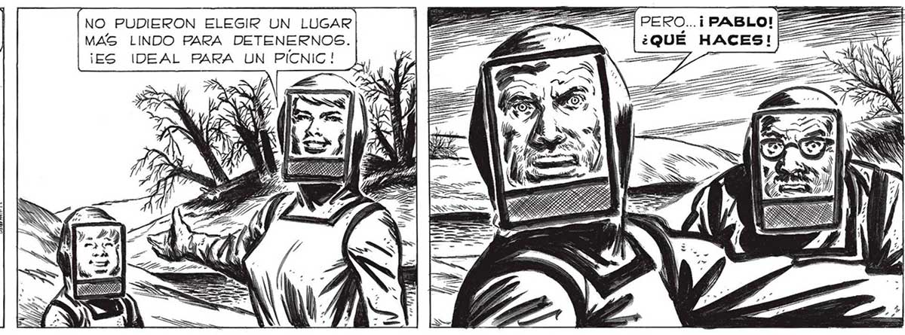
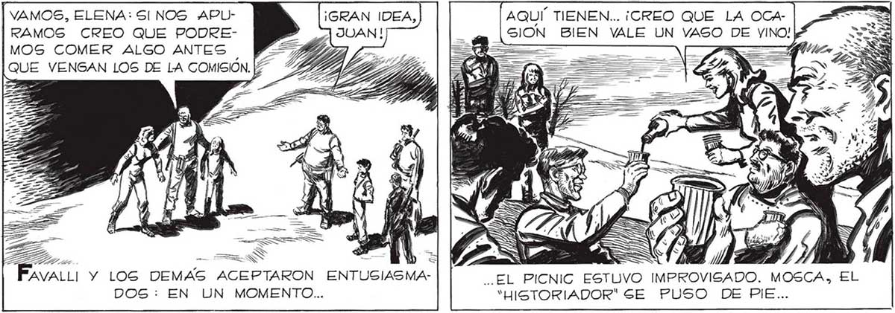

338 NO PUDIERON ELEGIR UN LUGAR | AAA PERO... i PABLO! MAS LINDO PARA DETENERNOS. ae ¿QUE HACES! | ¡ES IDEAL PARA UN PICNIC! Gl FUE UN VIAJE BASTANTE LARGO. PERO VALÍA LA PENA. POR FIN... YA ESTABA ACALAMBRANDOME TANTA QUIETUD. ¡OTRA VEZ PODEMOS BESARNOS, PAPA ! SI, MARTITA, OTRA VEZ... A FUERZA DE TANTO ANDAR EN MEDIO DE LA NEVADA UNO TERMINA POR ACOSTUMBRARSE... PABLO TIENE RAZON: YA NO NECEGITAMOG LOS TRAJES AISLANTES. ¡YA LO VE,SGEÑOR SALVO! ME QUITO EL CASCO...¡TOTAL, YA NO HAY MAS NIEVE! AUN". MM A RESULTO. ALGO MA RAVILLOSO LIBERARNOS POR FIN DE LA OPRESION DE LOS TRAJES AISLANTES. ] as sl bs FUE CASI TAN MAA lFsS=== ” "y —A FER LAN WM GA RAVILLOSO COMO > ===> 55 "| SENTIR OTRA VEZ —A == _=> SR e A El, EOL. GOBRE LA PIEL... ==, SSsss alli AAA AAA br "y a Sl; YA ESTABAMOS EN LA ZONA LIBRE DE NEVADA. AQUÍ TIENEN... ¡CREO QUE LA OCA| VAMOS, ELENA: SI NOS APLSION BIEN VALE UN RAMOS CREO QUE PODREMOS COMER ALGO ANTES | QUE VENGAN LOS DE LA COMISIÓ y Isa A BESARLAS, PERO ME CONTUVE: ERA == e CRUEL HACERLO DELANTE DE LOS OTROS. DE A h TODOS, YO ERA EL ÚNICO AFORTUNADO QUE AVALLI Y LOG DEMAS ACEPTARON ENTUSIASMA- EL PICNIC ESTUVO IMPROVISADO. MOSCA, EL CONSERVABA A LOS SERES QUERIDOS... DOS: EN UN MOMENTO... "HISTORIADOR" SE PUSO DE PIE... ñ , y =

